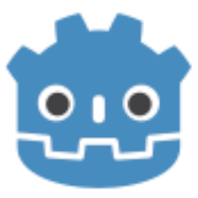

Godot Engine
Frozen in Launcher MITLightweight, node-based 2D and 3D open-source game engine.
Role in the Game Stack
Godot Engine is a versatile open-source game engine featuring a dedicated 2D pipeline, modern Vulkan-powered 3D renderer, and an intuitive scene and node hierarchy. It supports GDScript, C#, and C++ via GDExtension, with zero licensing fees or revenue shares.
Key Capabilities & Strengths
- Node and scene hierarchy architecture
- Fast iteration with zero compilation overhead in GDScript
- Vulkan, D3D12, and OpenGL rendering backends
- Self-contained lightweight executable under 100MB
Within sovereign and telemetry-free creative pipelines, Godot Engine serves as a direct open-source alternative to proprietary software.
OGS Launcher Integration & Frozen Releases
The Open Game Stack Launcher packages verified, immutable builds of Godot Engine. These releases are cached locally and launched without network access, vendor telemetry, or external licensing servers.
| Version | Size | SHA-256 Checksum | Executable | Notes | Archive |
|---|---|---|---|---|---|
4.7.2 |
82.0 MB | 731980f9608d61333e5baf54a2ef17210acc7a538446c0cb9969f002aca1e953 |
Godot_v4.7.2-stable_win64.exe |
Release Notes | Download ZIP |
4.3 |
54.7 MB | 8f2c75b734bd956027ae3ca92c41f78b5d5a255dacc0f20e4e3c523c545ad410 |
Godot_v4.3-stable_win64.exe |
Release Notes | Download ZIP |
Project Manifest Configuration (ogs_stack.json)
Pin Godot Engine to this frozen version in your project repository by declaring it inside your ogs_stack.json manifest:
{
"name": "MyGameProject",
"version": "1.0.0",
"tools": [
{
"id": "godot",
"version": "4.7.2",
"category": "Engine"
}
]
}Open-Source Vital Signs
Project health, licensing, and cross-platform runtime support for Godot Engine:
| Software License | MIT |
|---|---|
| Supported Platforms | Windows Linux macOS |
| Stack Category | Engine |
| Official Website | https://godotengine.org/ |
| Source Repository | https://github.com/godotengine/godot |
Getting Started & Learning Resources
Official documentation, tutorials, and community hubs to help game developers master Godot Engine:
- [Documentation] Godot Documentation
- [Assets] Godot Asset Library
- [Community] Godot Community Forum